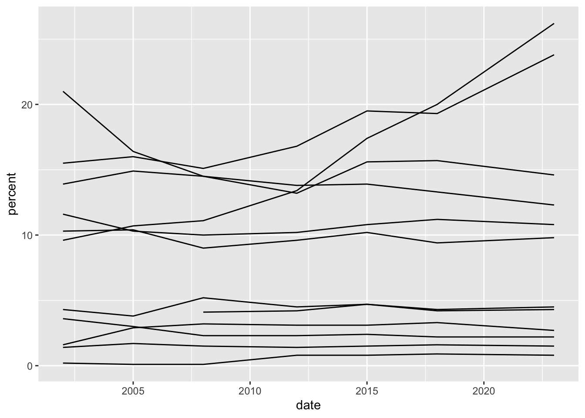
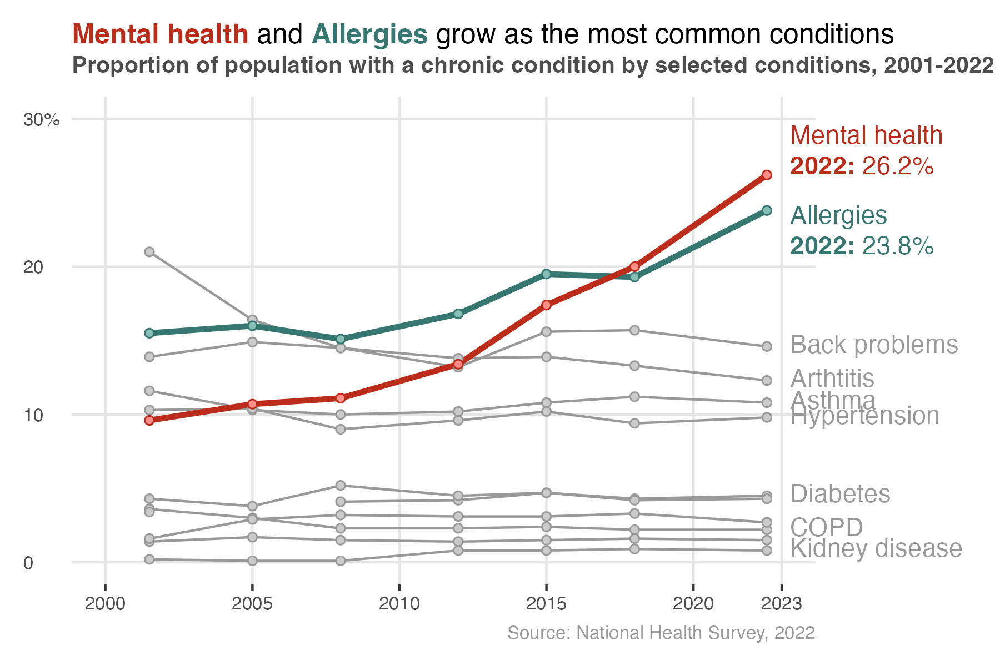
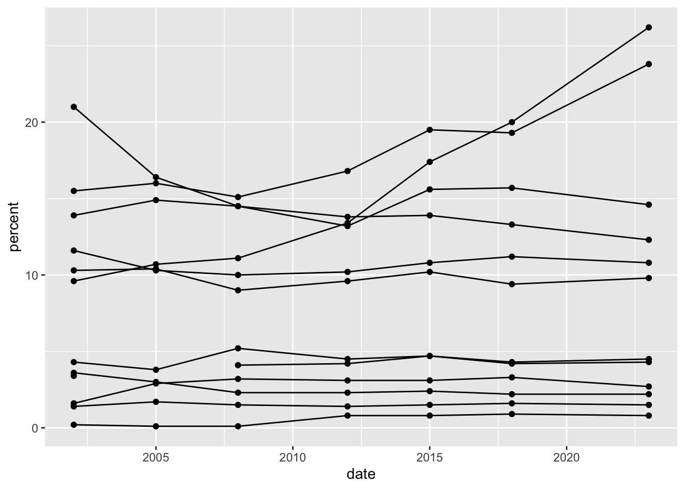
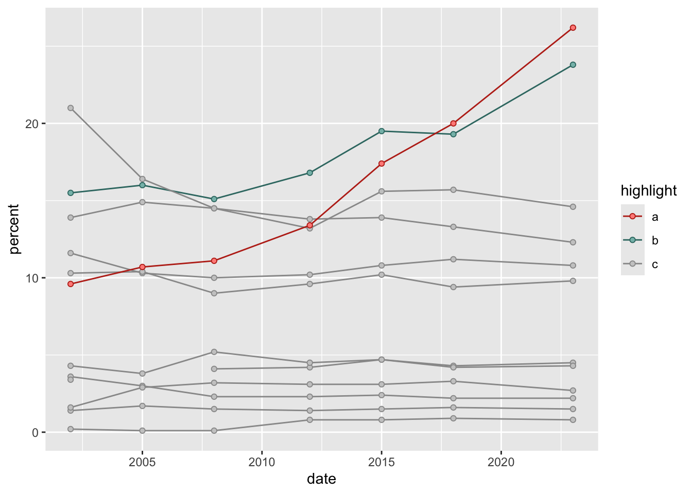
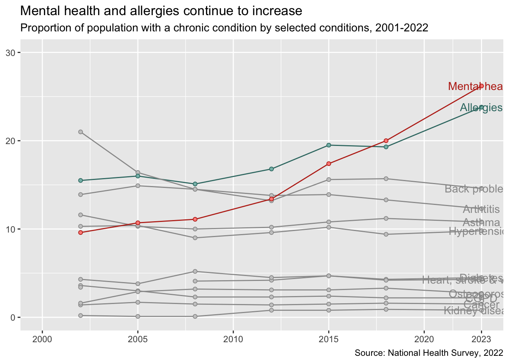
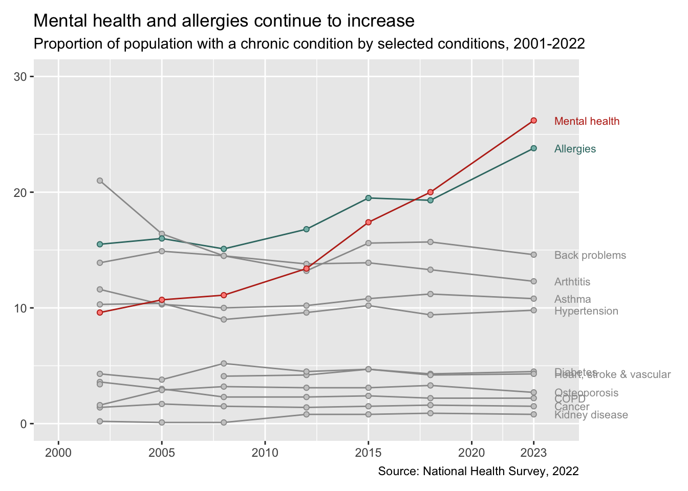
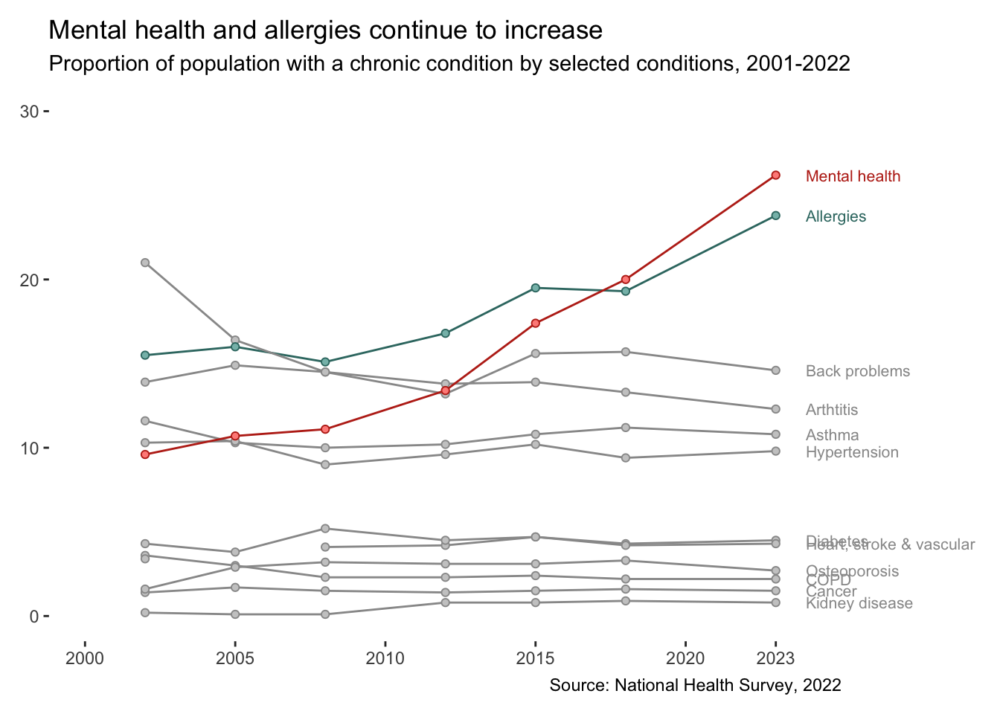
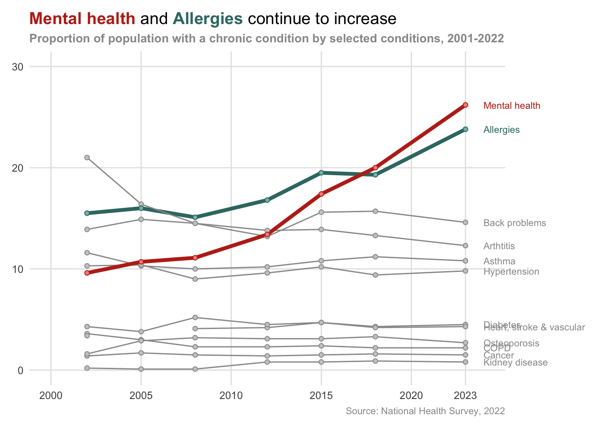
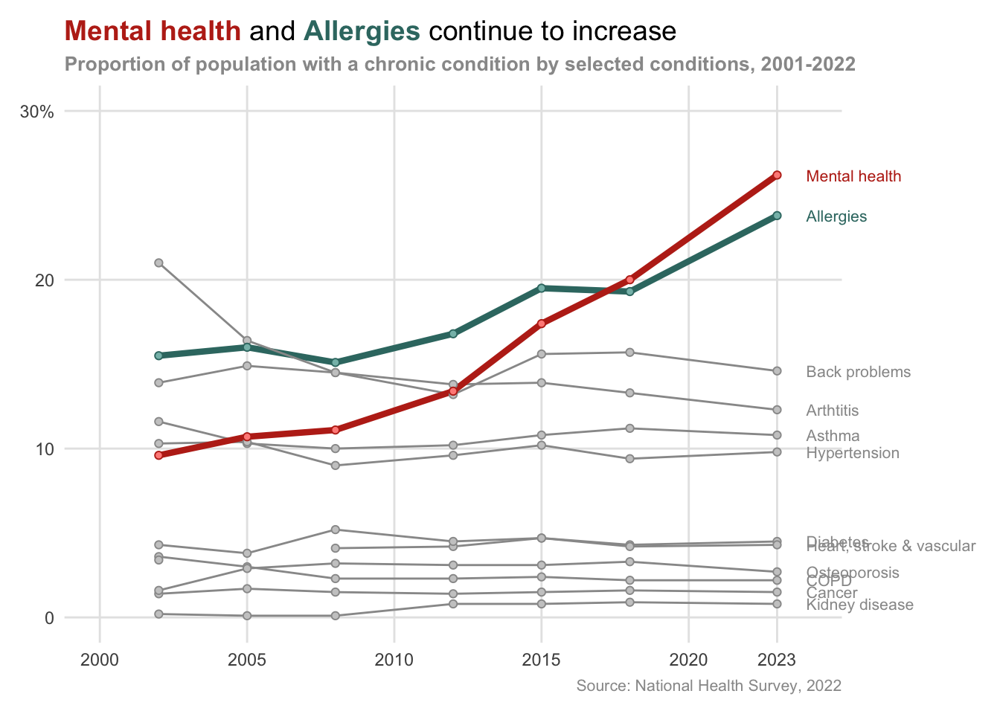

Step-by-step guide

1 Set up your code file meta data
As before, start by setting up your code file meta information.
- In RStudio, open the file
exercsies/1-code/4-plot-chronic-conditions.R - Update the details in the title box.
2 Load libraries
Remember to load all your libraries in one place at the top of the script all the libraries you need in a script in one place at the top of the file.
Start with the usual suspects: dplyr and ggplot2. You can add more as you go.
3 Load your data
The data might already be loaded into your R environment, but we should make this step an explicit part of the code.
Use the load() function to load the second clean dataset from exercises/3-clean-data. If you didn’t get to the end of the data cleaning exercise you can load the data from solutions/3-clean-data instead.
4 Start with a base plot
As a starting point, aim to create this line chart using geom_line(). You should be able to identify the x and y aesthetics from the axis labels above. You will also need to define the group aesthetic to make sure the line for each condition is plotted separately.
5 Add points

Add points on top of the lines using geom_point()
6 Add colours

Remember that aes(color=, fill=) refers to different things: color refers to the outline colour of a shape, while fill refers to the inside colour of the shape. Some shapes, like the lines and solid points here, only have a color property and fill can’t be defined.
Can you add highlight colours for the two upward trending conditions?
To do this:
- Use
case_when()to add a new variable to the dataset that codes Mental health as a, Allergies as b and everything else as c. Enter?case_when()at the console if you are having trouble remembering the syntax. - Map this new variable to color in
aes(). - Define your color scale in
scale_color_manual()
7 Add fill colour for the points

Add fill colour to the points by mapping fill to the same variable as colour in aes. You can then define the fill colours in scale_fill_manual()
8 Remove the legend

The legend isn’t much use so we can turn it off here. Use the same approach as the previous exercise, setting legend.position = "none" in your theme().
9 Remove the axis titles

One way to do this is to add the scale_* functions setting name = NULL.
10 Adjust the ranges on the x-axis and y-axis

Give the plot some breathing room by expanding the range of the x and y axes. You can do this by setting limits = c(min, max) in scale_x_date() and scale_y_continuous(). Set the x axis to run from 2000 to 2023 and set the y axis to run from 0 to 30.
11 Add title, subtitle, and caption

Do this using the labs() function, as in Exercise 3.
12 Add text labels

Add text labels using using geom_text(), setting the y aesthetic to percent and the x aesthetic to 2023-01-01.
13 Shift text labels to the right and make them smaller

Try setting the size and hjust arguments in geom_text() to shift the labels to the right and shrink them a bit.
14 Remove the grey background

Let’s get rid of the default grey background. We can do this by editing the panel background.
15 Add in major grid lines
We can add in major grid lines by setting panel.grid.major in your theme
16 Remove axis ticks

You can get rid of the axis ticks by setting axis.ticks() in the theme().
17 Increase the line size for the highlighted lines

As well as emphasising the key lines for Mental health and Allergies using colour, we can add extra emphasise by increasing the line size relative to the other conditions. To do this we need to set a new aesthetic linewidth which we can then control by setting scale_linewidth_manual().
18 Emphasise the key words in the title

Follow the example in Exercise 3 to emphasise the key words in the title.
19 Add text hierarchy in the title, subtitle and caption

Edit the plot.title, plot.subtitle, and plot.caption arguments in theme() to achieve this.
20 Add percentage symbol to y-axis label

This is a nice subtle way to communicate the meaning of the y-axis without using up too much space or ink. To achieve this you need to edit scale_y_continuous().
21 Tidy up condition labels

The labels for the conditions are a bit messy. We can take a few steps to tidy these up:
- Drop some of the overlapping conditions in the dataframe that gets passed to
geom_text() - All the percentage for the final data point for our two highlighted conditions.
Step 1 can be achieved by adding a filter() in the code that defines the text label data. Step 2 can be achieved by defining a new variable in the underlying chart dataset. This new variable can should combine the condition and the percent for the highlight lines and just the condition for the other lines.
You are a certified all star!!